Ваши замечания от 13.10.2026 по первой игре в Акт I. Всё, что меняет логику, уже в игре по прежней ссылке: юбка-шторка остаётся отодвинутой, пока вы у тележки (табличку видно только тогда); коридор и лифт — экраны, куда игрок идёт сам; музыка обрывается перед ударом. Картинки и музыка ниже — кандидаты: в игру уйдут после вашего выбора и «да».
Что не так было. На самом первом кадре игры Лапидус держит путёвку в рукавах пиджака и манжетах рубашки, а портрет рядом уже голый, и через секунду он в душе. Вы предложили: путёвку он держит уже голыми руками.
Что сделано. Кадр перерисован по образцу: всё как было, только руки голые до локтя. Два варианта, отличаются положением рук.
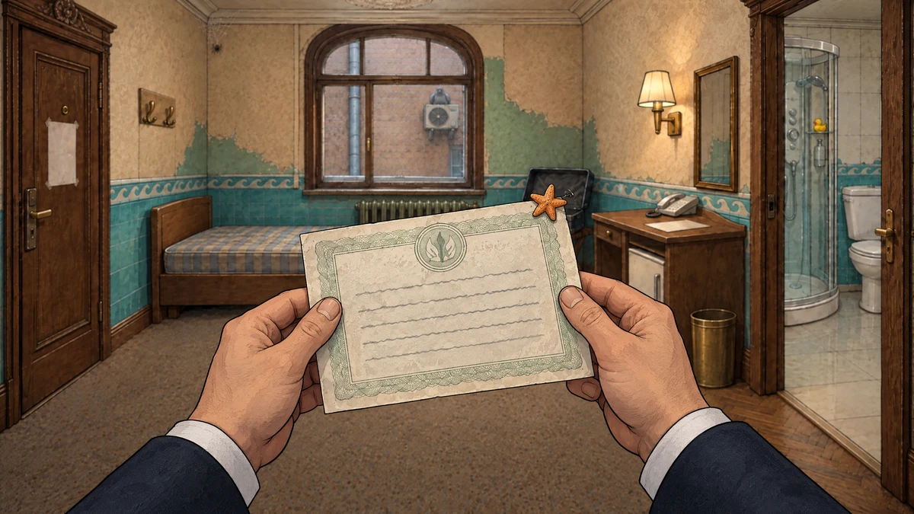
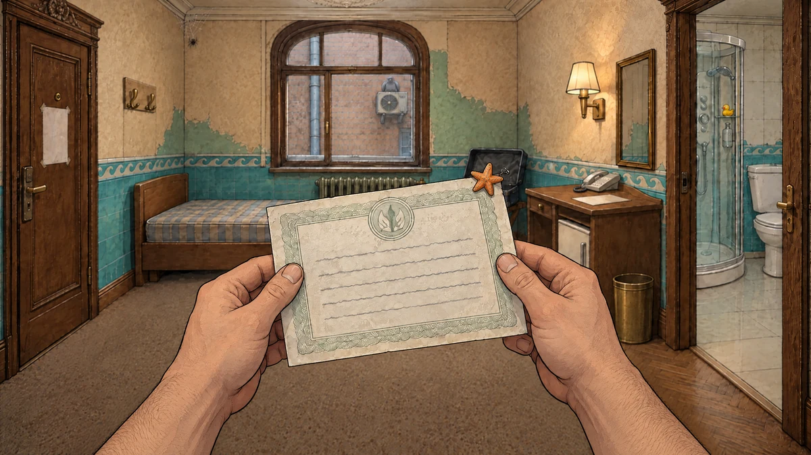
Что не так было. На флаконе в душе пустая этикетка, хотя вся завязка держится на этой пене: «премиум»-концентрат, который не смывается порциями.
Что сделано. На этикетке напечатано «ПЕНА · концентрат · «премиум»» шрифтами игры, с лёгким размытием, чтобы надпись выглядела нарисованной, а не наклеенной поверх. Буквы проверены по одной.
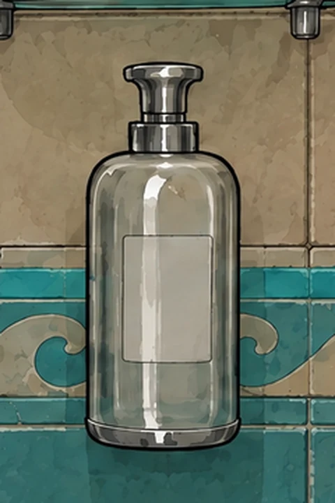
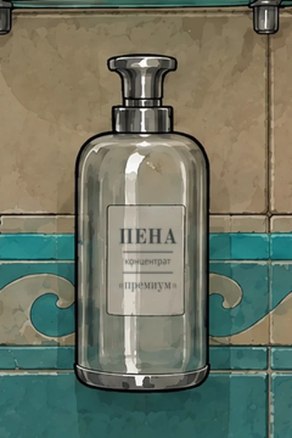
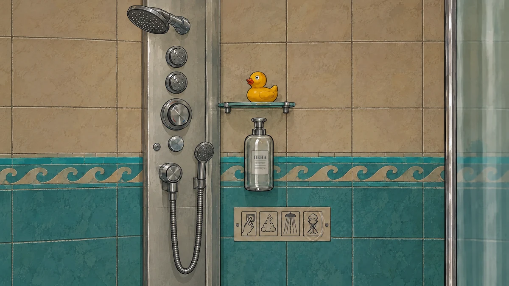
Что не так было. Текст говорит «под колпаком один круассан», а на картинке круассан лежит рядом на тарелке; и зона круассана называлась «Колпак». Здесь побеждает замороженная сдача Акта I: шутка «колпак прикрывает круассан, а не меня» (D16) держится на том, что круассан под колпаком. Поэтому исправлена картинка, а не текст.
Что сделано. Тарелка с круассаном убрана с подноса на всех трёх картинках с тележкой (зум тележки и два слоя тележки в номере). Зона «Колпак» теперь только на колпаке. Вариант А оставляет на подносе пустое латунное блюдо, вариант Б — чистый поднос с еле заметным бликом.
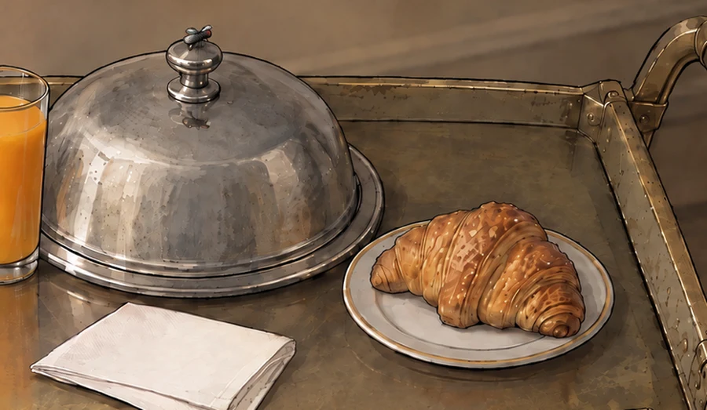
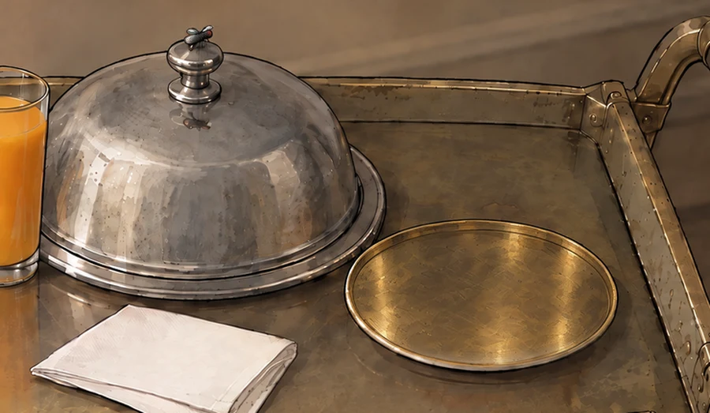
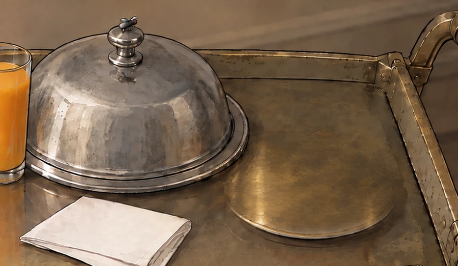
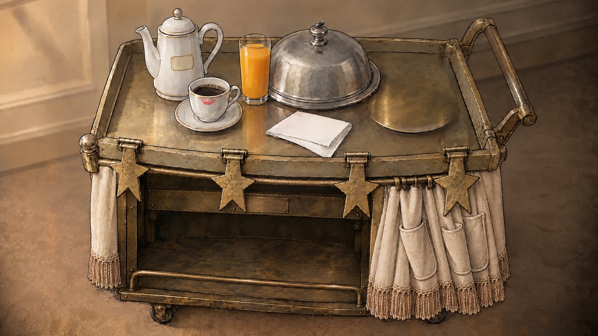
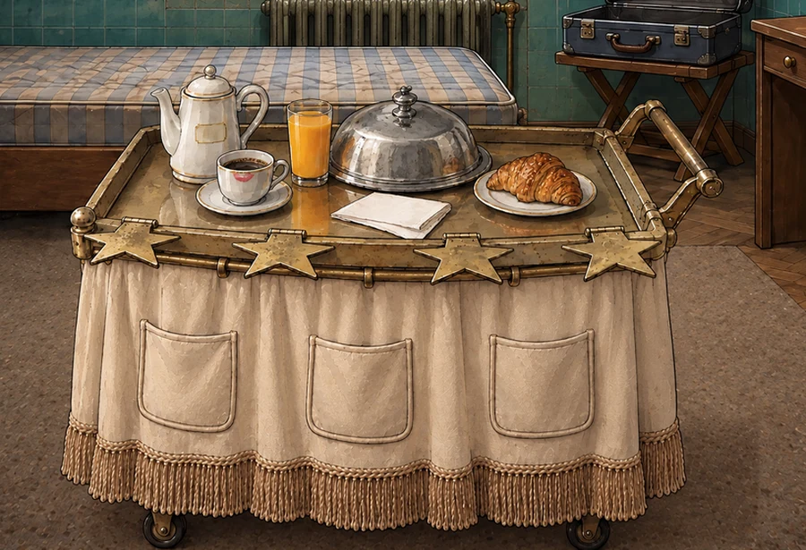
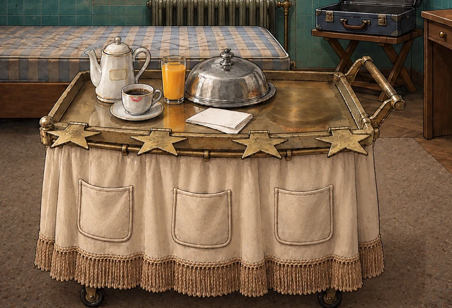
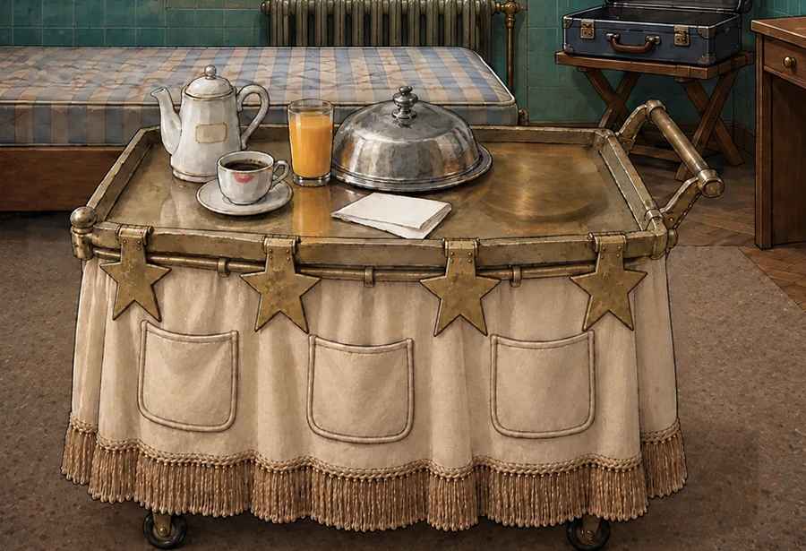
Что не так было. На двух кадрах вестибюля (Лапидус выглядывает из лифта; официант с тележкой) по волосам, лицам и мрамору рассыпаны белые и тёмные точки — след многократных перегенераций.
Что сделано. Отдельные точки найдены программой (крошечные пятна, резко отличающиеся от соседей) и заменены цветом окружения. Контуры и штрихи рисунка не тронуты. Ниже — самые «заснеженные» места крупно, было и стало, и оба кадра целиком.
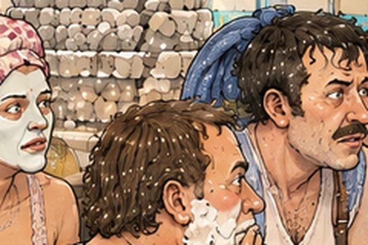
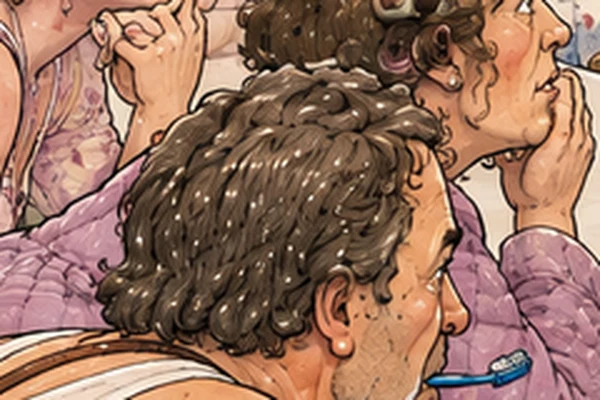
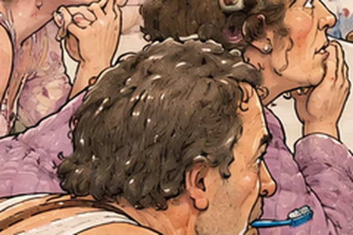
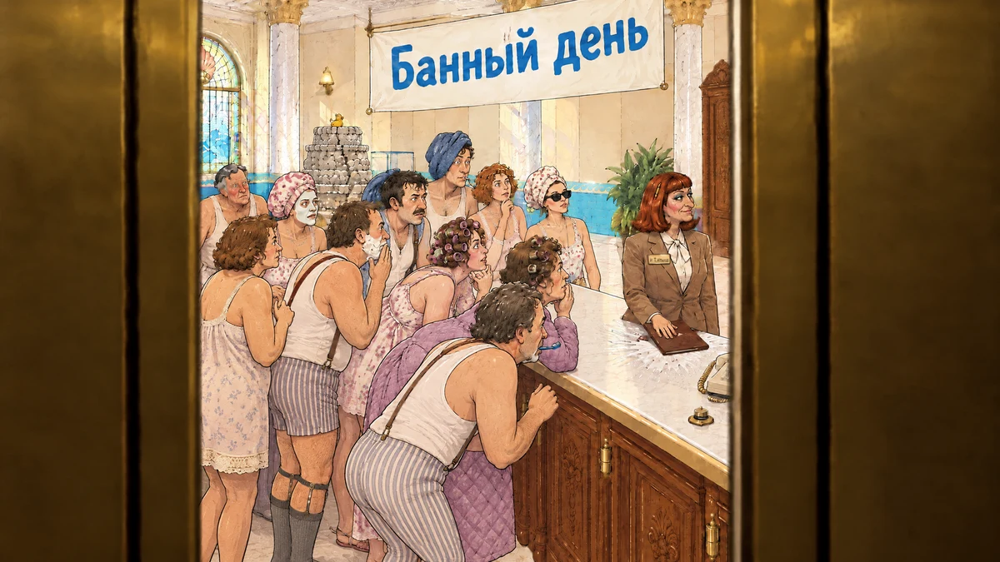
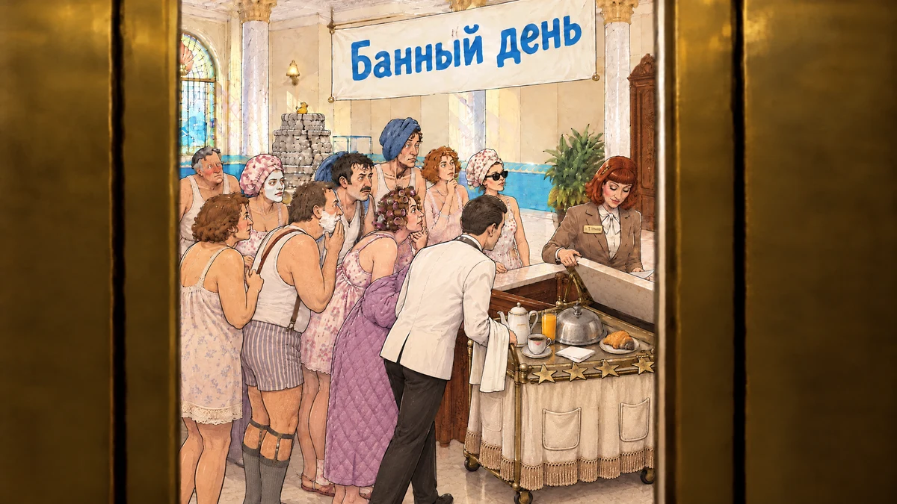
Что вы просили. В номере в начале — что-то более вальяжно-курортное. За мгновение до гидроудара музыка обрывается, удар звучит в тишине. После него — вариация той же темы, тревожнее, но всё ещё с юмором.
Как сделано. Каждое демо собрано так, как будет в игре: курортная тема (38 с) → обрыв → 0,7 с тишины → удар из игры → вариация. Вариация сделана новой моделью ElevenLabs «по образцу» — ей дают кусок самой темы, и она играет её же, другими инструментами и с другим настроением. «Свободнее» — образец держит слабее: мелодия узнаётся меньше, зато настроение меняется сильнее. Описания — по заданию и анализу спектра, не на слух: решает ваше ухо. Я проверил тональность программой: во всех вариациях, кроме гавайской «ещё свободнее», остался мажор, тревогу дают инструменты и темп. Если нужен явный минор — скажите, сделаю следующий круг.
В игре уже работает (по ссылке на игру): обрыв музыки и звука номера перед ударом, удар в тишине, потом тема номера входит плавно. Пока на старой теме — новая встанет после вашего выбора.
Сейчас в номере и вестибюле (Акты I–II) играет одна тема отеля. Тревожная вариация может её заменить, или звучать только в Акте I после удара, а в Акте II вернётся прежняя тема отеля.
Мой совет: заменить в Акте I, а в Акте II оставить прежнюю тему отеля: к середине игры Лапидус уже освоился, тревога сменяется азартом.
После слов о путёвке добавлена ваша строка; ТЗ Акта I для этого слота расширено до четырёх реплик.
Что не так было. Вторая реплика при осмотре звёзд говорила только «звёзды на петлях» — игроку непонятно, откуда вывод, что их можно сложить. По ТЗ здесь нужна улика: петли и потёртые дуги на бортике.
Что сделано. Добавлены дуги: бортик протёрт, значит звёзды откидывали не раз. Ваша шутка про звезду в петличку осталась. На картинке петли видны у каждой звезды.
Что не так было. Выйдя в коридор, Лапидус сам собой заходил в лифт и ехал вниз — и при этом говорил, что к людям не хочет.
Что сделано. Коридор и кабина лифта стали обычными экранами. Щелчок по двери номера — Лапидус выглядывает в коридор; можно вернуться в номер. Щелчок по лифту — он в кабине у панели; можно выйти. Кнопка «Вестибюль» — двери открываются в вестибюль, Лапидус смотрит из кабины и едет обратно. Реплика в лифте теперь объясняет, зачем он едет: только посмотреть, не выходя.